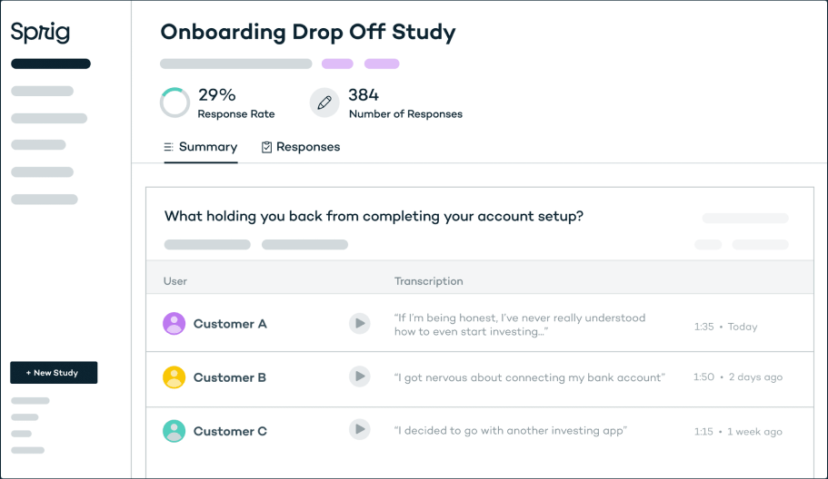

Ручная работа.
Крутая швейная деятельность это обязательно бренд, со своими особенностями(то что отличает одежду от остальных), направленность, коллекции по сезону или к каким то событиям, датам.... Знакомство с брендом через знакомство с авторами, мастер классы, мероприятия... Экологичность сейчас в моде, тоесть в чем заключается экологичность(или партнёрство с благотворителями или экологичное производство). Что то на словах, что то в картинках должно быть... Как реализация происходит... В каких соцсетях, магазинах и т.д.

Modern product teams move fast, but learning from customers takes a ton of time, effort, and energy.
So teams often rush user research or skip it altogether, causing products and features to miss the mark.
Sprig makes it possible to obtain qualitative insights at the speed and scale of analytics

Target your actual users during key moments throughout their product journey.
Get 30% higher response rates by asking your customers hyper-relevant questions based on who they are and what they'll do within your product.
How Sprig helps ensure every product decision is customer-informed
And helps through every stage of your product.

Contextual Microsurveys
Keep a constant pulse on your customer’s experience. Continuously surface user insights via in-product, email, or link microsurveys to improve your product and acquisition funnels.